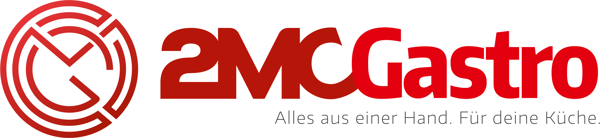

PDF olarak kaydetmek için: Tarayıcıda Ctrl+P → Hedef: PDF olarak kaydet → Boyut: A4 (Dikey) → Kenar boşlukları: Varsayılan. Bu uyarı kutusu çıktıda görünmeyecek.

2MC Gastro
Profesyonel Mutfak Planlama Platformu
Web Projesi
Yönetim Sunumu
Avrupa pazarına yönelik endüstriyel mutfak ekipman platformumuzun mevcut durumu, son 3 ayın ilerlemesi ve önümüzdeki adımlar.
GİZLİ — YALNIZCA YÖNETİM İÇİN
2mc-gastro.com
İçindekiler
- Yönetici Özeti
- Proje Hakkında — Ne yapıyoruz, neden?
- Mevcut Durum — Bugün canlı olan özellikler
- Teknik Altyapı — İş diliyle
- Çoklu Dil & Pazar Erişimi — 15 Avrupa dili
- Görsel Tur — Ekran görüntüleri
- Rakip Karşılaştırması — Pazardaki konumumuz
- İlerleme Zaman Çizelgesi — Son 90 günde yapılanlar
- Önümüzdeki Adımlar — Yol haritası
- Riskler & Bağımlılıklar
- Kapanış & Karar Beklenen Konular
Notasyon:
CANLI bugün kullanılabilir ·
BETA test aşamasında ·
PLAN yol haritasında
1 · Yönetici Özeti
1 dakikalık okuma
2MC Gastro, Avrupa'daki restoran, otel ve catering işletmelerine endüstriyel mutfak ekipmanı satışı için tasarlanmış, çok dilli, uçtan uca bir B2B platformdur. Müşteri ürünü görüyor, mutfağını üç boyutlu tasarlıyor, teklif istiyor ve isterse online ödüyor — hepsi aynı sistemde.
Bugün nereye geldik
- Tam çalışan satış kanalı. Müşteri kayıt oluyor, sepet hazırlıyor, kredi kartıyla ödeyebiliyor veya teklif talebi gönderebiliyor — sistem uçtan uca canlı.
- 6.300+ ürün otomatik güncel. Diamond ve CombiSteel ana tedarikçilerin katalogları her gün otomatik olarak siteye senkronize oluyor — manuel veri girişi yok.
- 3D Mutfak Planlayıcı. Müşteri kendi mutfağının ölçülerini girip ekipmanları sürükle-bırak ile yerleştirebiliyor; çıktıyı PDF veya AutoCAD formatında alabiliyor.
- 15 dilde tam çeviri. Türkçe, Almanca, İngilizce, Fransızca, İtalyanca, İspanyolca, Hollandaca, Lehçe, Çekçe, Romence, Yunanca, İsveççe, Danca, Portekizce, Macarca — Avrupa'nın hemen tüm pazarlarına satış altyapısı hazır.
- Profesyonel teklif PDF'i. Logo, hologram filigran, ürün görselleri ve Türkçe karakter desteğiyle marka kimliğine uygun PDF teklifler tek tıkla üretiliyor.
- Yönetim paneli. Sipariş, kullanıcı, teklif talebi ve blog içeriği yönetimi tek panelden — ofisten görünürlük tam.
Önümüzdeki 30–60 gün
- Görsel ve içerik zenginleştirme (gerçek mutfak fotoğrafları, müşteri referansları)
- Pazarlama açılışı (SEO içerikleri zaten hazır, yayına alınacak)
- Otomatik e-posta akışları (sipariş onayı, teklif takibi) tam devreye
Sonuç: Platform satışa hazır. Bundan sonraki yatırım yazılımdan çok pazarlama ve içerik tarafına kayıyor.
2 · Proje Hakkında
Ne yapıyoruz?
2MC Gastro; restoran, otel, catering şirketleri, bulut mutfaklar ve fırınların ihtiyacı olan profesyonel mutfak ekipmanlarını alabilecekleri, mutfaklarını planlayabilecekleri ve teklif yönetebilecekleri tek bir dijital platformdur. Site açılış cümlemiz bunu özetliyor: "Avrupa'nın Gastro Ekipman Platformu — 15 markanın tüm kataloğunu tek platformda keşfet, BOM oluştur, mutfak planla, teklif al."
Hedef müşteri
- Yeni mutfak kuran restoranlar / oteller — sıfırdan ekipman seçmesi gerekenler
- Catering ve bulut mutfak işletmeleri — hızlı büyüyen, sürekli ekipman ekleyen yapılar
- Mutfak danışmanları & mimarlar — müşterileri için BOM (malzeme listesi) ve planlama yapanlar
- Fırın ve pastane zincirleri — özel ekipman ihtiyacı olanlar
Çözdüğümüz problem
Endüstriyel mutfak ekipmanı satın alma süreci bugün hâlâ çok parçalı: müşteri farklı tedarikçi sitelerinden teklif topluyor, mimar AutoCAD'de plan çiziyor, satıcı manuel teklif hazırlıyor, ödeme havale ile ilerliyor. Biz bu zinciri tek platformda birleştiriyoruz: katalog → 3D planlama → BOM → teklif → ödeme → takip.
Geleneksel süreç
- 3-5 ayrı tedarikçi sitesi
- Mimara çizim için ödenen ek ücret
- E-posta ile dolaşan PDF teklifler
- Manuel havale, takipsiz
- Yabancı müşteriye dil bariyeri
2MC Gastro ile
- Tek platform, 6.300+ ürün
- Tarayıcıda 3D mutfak planı
- Otomatik markalı PDF teklif
- Stripe ile online ödeme
- 15 dilde tam yerelleştirme
Stratejik konumumuz: Türkiye merkezli ama hedefimiz Avrupa. Sitemiz baştan 15 dilli kuruldu — bu, rakiplerimizin çoğunda olmayan bir başlangıç avantajı.
3 · Mevcut Durum — Bugün Canlı Olan Özellikler
Aşağıdaki özelliklerin tamamı bugün canlı sistemde çalışıyor — demo değil, üretim ortamında müşterinin kullanabileceği halde.
Müşteri tarafı
Ana Sayfa & Kategori Vitrini CANLI
Marka tanıtımı, kategori showcase, istatistikler, çağrı butonları.
6.316 Ürünlük Katalog CANLI
Filtreli, sıralanabilir, karşılaştırılabilir; grid/liste/tablo görünüm.
Ürün Detay Sayfası CANLI
Teknik özellikler, fiyat, görseller, sepete/teklife ekleme.
Sepet & Sipariş CANLI
Çoklu ürün, miktar, KDV, toplam — Stripe ile ödeme.
Teklif Talebi (RFQ) CANLI
Müşteri ödeme yapmadan profesyonel PDF teklif alabilir.
3D Mutfak Planlayıcı CANLI
Oda çiz, kapı/pencere ekle, ekipman sürükle-bırak yerleştir.
Manuel Çizim (AutoCAD benzeri) CANLI
Mimar profili için: serbest çizim, vertex düzenleme, alan hesabı.
Eskiz Modu (Tablet) CANLI
Dokunmatik canvas, 5mm snap, kaydet/yükle.
Kat Planı PDF Çıktısı CANLI
Çizim + ölçüler + ekipman listesi tek PDF'de.
3D Model Görüntüleyici CANLI
Ürünlerin GLB modelleri tarayıcıda döndürülebilir.
Mutfak Hesaplayıcı CANLI
Alan, güç, kapasite ön hesabı — satış öncesi araç.
Blog & SEO İçerikleri CANLI
İçerik yönetim paneli ve sayfa otomasyonu (pSEO) hazır.
Yönetim tarafı
Sipariş Yönetimi CANLI
Tüm siparişler, durum güncelleme, arama, filtre.
Kullanıcı Yönetimi CANLI
Müşteri listesi, rol yönetimi, yetkilendirme.
Teklif Talebi Paneli CANLI
Gelen RFQ'lar, takip, geri dönüş.
Blog Yönetimi CANLI
İçerik ekleme, düzenleme, yayınlama.
Bildirim Paneli CANLI
Yeni siparişler, sistem değişiklikleri.
Diamond & CombiSteel Senkron Durumu CANLI
Günlük otomatik veri çekiminin durumu izlenebiliyor.
4 · Teknik Altyapı — İş Diliyle
Yazılım kararlarını teknik dille değil, neyi iş açısından kazandırdığını açıklıyoruz.
| Bileşen | Bize ne kazandırıyor? |
|---|
Modern web altyapısı
React 19 + Vite 6 + Tailwind 4 |
Site hızlı açılıyor, mobilde akıcı çalışıyor. Geliştirici işe alımında piyasanın en yaygın araçları — kişiye bağımlı kalmıyoruz. |
Veri ve kullanıcı sistemi
Supabase (PostgreSQL) |
Müşteri hesapları, siparişler, teklifler, blog içerikleri — hepsi güvenli ve ölçeklenebilir tek bir veritabanında. Google ile giriş, e-posta doğrulama hazır. |
Online ödeme
Stripe |
Kredi kartı ile ödeme alabiliyoruz — havale takibi yok. Avrupa'nın standart ödeme sağlayıcısı, müşteri güveni yüksek. |
3D & planlama motoru
Three.js + Meshy AI |
Tarayıcıda gerçek 3D ekipman görüntüleme ve mutfak planlama. Rakiplerin çoğu sadece 2D görüntü ile satıyor. |
PDF & teklif üretimi
jsPDF + html2canvas |
Marka kimliğine uygun, hologram filigranlı, ürün görselli profesyonel teklifler tek tıkla üretiliyor. |
Çoklu dil sistemi
i18next + react-i18next |
15 dilde tam çeviri. Yeni dil eklemek artık birkaç saatlik iş — pazar genişlemesi engellenmiyor. |
| Tedarikçi entegrasyonları |
Diamond EU ve CombiSteel tedarikçilerimizden ürünler her gün otomatik güncelleniyor — manuel girişe gerek yok, fiyat/stok her zaman güncel. |
| Yapay zekâ destekleri |
Sohbet asistanı (müşteri soruları), içerik üretici (blog/SEO), 3D model üretici (Meshy) — sunucu fonksiyonları olarak hazır. |
| Otomatik dağıtım (deploy) |
Yapılan her güncelleme tek komutla canlıya çıkıyor; manuel sunucu işlemi yok, hata payı düşük. |
Sunucu tarafında çalışan otomasyonlar (8 servis)
Aşağıdaki 8 sunucu fonksiyonu arka planda çalışıyor — müşteri görmez ama hepsi gelir-üretici işlerin temelini taşıyor:
- Stripe ödeme oluşturma + webhook — ödeme alımı ve onaylama
- Diamond senkronizasyonu — günlük ürün/fiyat güncellemesi
- Meilisearch senkronizasyonu — hızlı ürün arama
- E-posta gönderici — sipariş, teklif, bildirim mailleri
- AI sohbet asistanı — müşteri sorularına yanıt
- İçerik üretici — blog/SEO için brief oluşturma
- Meshy AI 3D üretici — ürün için 3D model oluşturma
5 · Çoklu Dil & Pazar Erişimi
Sitemiz 15 Avrupa dilinde tam çevrilmiş durumda. Bu, Türkiye merkezli bir B2B platform için Avrupa pazarına çok hızlı satış başlatma avantajı demektir.
TR Türkçe
EN English
DE Deutsch
FR Français
IT Italiano
ES Español
NL Nederlands
PT Português
PL Polski
CS Čeština
RO Română
EL Ελληνικά
SV Svenska
DA Dansk
HU Magyar
Niye 15 dil?
- Almanya, Hollanda, İskandinavya: Avrupa'da gastro ekipman pazarının en büyük alıcıları. Almanca, Hollandaca, İsveççe, Danca müşterinin kendi dilinde alışveriş bekliyor.
- Doğu Avrupa (PL, CS, RO, HU): Hızlı büyüyen restoran zincirleri, Türk üreticinin fiyat avantajına en duyarlı pazar.
- Güney Avrupa (IT, ES, EL, PT): HoReCa sektörünün ekonomide ağırlığı yüksek olan ülkeler.
- İngilizce: Avrupa dışı pazarlar (Orta Doğu, Afrika) için kapı.
İş açısından önemi: Yeni bir pazara açılmak için site geliştirme süresi sıfır. Sadece pazarlama ve lojistik kararı verilmesi yeterli — sitede teknik engel yok.
Tutarlılık güvencesi
Her dil için aynı anahtar seti kullanılır; çeviri kalitesini denetlemek için kendi içsel "dil uzmanı" sürecimiz var. Türkçe ana dildir; diğer 14 dil profesyonel kalite kurallarına göre Türkçeden çevrilir (sektör terminolojisi, formal hitap, marka adlarına dokunulmaması).
6 · Görsel Tur
Sitenin en kritik ekranları. (Bu sayfanın yüksek çözünürlüklü ekran görüntüleriyle güncellenmesi tavsiye edilir — aşağıdaki kutular yer ayırıcıdır.)
Ana sayfa & ürün vitrini
[ Görsel: Ana sayfa hero + kategori vitrini — ekran görüntüsü eklenecek ]
Katalog & filtreler
[ Görsel: 6.316 ürünün filtrelenebilir katalog görünümü — eklenecek ]
3D Mutfak Planlayıcı
[ Görsel: Oda çizimi + ekipman yerleştirme — eklenecek ]
Profesyonel teklif PDF'i
[ Görsel: Logo, hologram filigran, ürün görseli içeren PDF örneği — eklenecek ]
Yönetim paneli
[ Görsel: Sipariş listesi + bildirim paneli — eklenecek ]
7 · Rakip Karşılaştırması
Avrupa pazarında doğrudan rakip kabul ettiğimiz iki büyük oyuncuya göre konumumuz. Bu karşılaştırma kendi platformlarının halka açık özelliklerine ve önceki rekabet analizimize dayanmaktadır.
| Özellik |
2MC Gastro |
BigGastro |
GGM Gastro |
| Ürün adedi | 6.300+ | ~10.000+ | ~7.000+ |
| Desteklenen dil | 15 dil | ~6 dil | ~10 dil |
| Tarayıcıda 3D Mutfak Planlayıcı | Var | Yok | Yok |
| Manuel çizim (AutoCAD benzeri) | Var | Yok | Yok |
| Otomatik markalı PDF teklif | Var (hologram, görsel, çok dilli) | Sınırlı | Var (basit) |
| Stripe online ödeme | Var | Var | Var |
| 3D ürün görüntüleme (GLB) | Var | Yok | Yok |
| Tedarikçiden günlük otomatik senkron | Var (Diamond + CombiSteel) | — | — |
| AI sohbet asistanı | Var | Yok | Yok |
| Türkiye merkezli üretim/lojistik avantajı | Var | Yok | Yok (Almanya) |
Üç güçlü yanımız
- 3D + planlama: Rakipler statik ürün siteleri; biz "araç" sunuyoruz. Müşteri sitede daha uzun kalıyor, dönüşüm yüksek.
- Çok dilli baştan: Yeni pazara teknik engel yok; rakiplerden daha hızlı genişleyebiliriz.
- Maliyet/lojistik: Türkiye üretimi + Avrupa pazarı = fiyat-performans avantajı.
Kapatmamız gereken iki açık
- Ürün adedi: 6.300, ana rakiplerin altında. Yeni tedarikçi entegrasyonları ile kapatılabilir (entegrasyon altyapısı zaten kurulu).
- Marka bilinirliği: Sıfır marka tanınırlığı — pazarlama yatırımı önümüzdeki dönemin önceliği olmalı.
8 · İlerleme Zaman Çizelgesi — Son 90 gün
Geliştirici terminolojisinde tek tek değişiklikler yerine, ne işe yaradığı bazında gruplandırılmış ilerleme.
Nisan 2026 — 3. hafta
Otomatik dağıtım altyapısı kuruldu
Her güncelleme tek komutla canlıya çıkıyor. Sunucu yönetimi otomatik; manuel müdahale ve hata riski azaldı.
Nisan 2026 — 3. hafta
Mutfak Planlayıcı baştan tasarlandı + AutoCAD benzeri manuel çizim eklendi
Mimar ve danışman kullanıcı segmenti için ciddi bir özellik — rakiplerden ayrıştığımız ana noktalardan biri.
Nisan 2026 — 2. hafta
Yeni Supabase altyapısına geçiş + Meshy AI 3D üretici entegrasyonu
Veri mimarisi temiz bir başlangıçla yenilendi; AI ile 3D model üretimi devreye girdi.
Nisan 2026 — 2. hafta
CombiSteel günlük otomatik senkron
Diamond'dan sonra ikinci büyük tedarikçi de otomatik veri akışına bağlandı.
Nisan 2026 — 1. hafta
Diamond EU tam senkron + 3 görünüm modu (grid/liste/tablo) + bildirim paneli
Diamond ürünleri tüm Excel sütunlarıyla görüntülenebiliyor; değişiklikler bildirimle takip ediliyor. Profesyonel alıcılar tablo görünümünü tercih ediyor.
Nisan 2026 — 1. hafta
Tüm verilerin otomatik kaydı (auto-save)
Müşteri çiziminin ve sepetinin yarısında tarayıcıyı kapatsa bile kaldığı yerden devam edebiliyor — terkedilmiş sepet kaybı azalıyor.
Nisan 2026 — 1. hafta
PDF teklifte hologram filigran, ürün resimleri, Türkçe karakter desteği
Marka kimliğine uygun, profesyonel, çok dilli teklif çıktısı. Satışta güven sinyali.
Nisan 2026 — 1. hafta
Mobil & tablet deneyimi tam onarıldı
Saha kullanıcıları (mimar, satıcı temsilcisi) tablette çizim yapabiliyor — eskiz modu dokunmatik için optimize.
Nisan 2026 — 1. hafta
Stripe ödeme + Google ile giriş + BOM fiyatı + teklif formatı
Satış kanalının kapanış halkaları — müşteri kayıt olabiliyor ve ödeme yapabiliyor.
Nisan 2026 — 1. hafta
Gerçek ölçekli kat planı + kapı/pencere + alan hesabı
Mutfak planlama artık "oyuncak" değil; mimari standartta ölçekli çıktı veriyor.
Hız notu: Yukarıdaki tüm özellikler son 3 hafta içinde devreye alındı. Geliştirme hızı şu an çok yüksek — odak önümüzdeki dönem stabilizasyon ve içerik tarafına kayacak.
9 · Önümüzdeki Adımlar — Yol Haritası
Kısa vade (önümüzdeki 30 gün) PLAN
- Görsel ve içerik tamamlama: Sunumdaki yer ayırıcı görsellerin gerçek ekran görüntüleriyle değiştirilmesi; ürün kategorisi banner'ları.
- Otomatik e-posta akışları: Sipariş onayı, teklif takibi, terkedilmiş sepet hatırlatma.
- SEO başlangıç içerik yayını: Hazır olan blog/pSEO altyapısının yayına alınması.
- Performans & mobil ince ayar: Sayfa açılış hızı testleri, Lighthouse skoru optimizasyonu.
Orta vade (60–90 gün) PLAN
- Yeni tedarikçi entegrasyonları: Ürün adedini 10.000+ seviyesine taşıyacak 1-2 yeni tedarikçi (Diamond/CombiSteel altyapısı tekrar kullanılabilir).
- Müşteri referansları & case study: İlk satışlardan referans, sosyal kanıt için.
- Almanca pazara odaklı kampanya: En büyük Avrupa pazarına yönelik içerik + reklam.
- AI sohbet asistanı satış senaryolarıyla beslenmesi: Müşteri sorularını gerçek satışa çevirmek için.
Uzun vade (90+ gün) PLAN
- Bayilik / dropshipping modülü: Diğer satıcılar için "white-label" katalog erişimi.
- Mobil uygulama (React Native): Mevcut kod tabanından paralel geliştirme.
- Kurumsal hesap yönetimi: Zincir restoranlar/oteller için çok kullanıcılı şirket hesapları.
- Servis & bakım modülü: Satış sonrası destek — tekrar gelir kanalı.
10 · Riskler & Bağımlılıklar
Açık ve dürüst değerlendirme. Hiçbiri proje durdurucu değil, ancak farkında olmamız gerekiyor.
| Risk | Seviye | Tanım & Önlem |
|---|
| Marka bilinirliği yok |
YÜKSEK |
Site hazır ama trafik yok. Önlem: SEO içerikleri ve hedefli reklam bütçesi. Kısa vadeli en kritik konu. |
| Tek tedarikçi yoğunluğu |
ORTA |
Ürünlerin büyük kısmı Diamond ve CombiSteel'den. Tedarikçi koşullarındaki değişiklik etkisi olabilir. Önlem: 3. tedarikçi eklemek. |
| Ödeme sağlayıcı (Stripe) bağımlılığı |
DÜŞÜK |
Stripe Avrupa standardı; risk düşük. Yedek olarak iyzico/havale akışı eklenebilir. |
| Hosting/altyapı maliyetleri |
DÜŞÜK |
Şu an aylık maliyet düşük (Vercel + Supabase free/starter). Trafik arttıkça doğrusal artar; satış geliriyle dengelenmesi planlanıyor. |
| Ürün görseli/içerik kalitesi |
ORTA |
Tedarikçi görselleri yeterli ama "showroom" hissi yok. Önlem: Profesyonel mutfak fotoğrafları + müşteri uygulama örnekleri. |
| Yapay zekâ servis maliyetleri |
DÜŞÜK |
AI sohbet ve içerik üretimi kullanım başına ücretli. Trafik arttıkça izlenmeli; yüksek hacimde alternatif modellere geçiş mümkün. |
| Ekibe geliştirici bağımlılığı |
ORTA |
Şu an küçük ekip. Önlem: Standart ve yaygın teknolojiler kullanıldı (React/TypeScript); yeni geliştirici devralabilir. |
| Yasal & KVKK/GDPR uyumu |
DÜŞÜK |
Çerez bandı, gizlilik politikası, GDPR aksiyonları (veri silme/dışa aktarma) modülleri canlı. Hukuk danışmanı incelemesi tavsiye. |
Tek satırlık değerlendirme: Teknik tarafta riskimiz düşük; iş riski yalnızca pazarlama tarafında — siteye trafik getirmemiz gerekiyor.
11 · Kapanış & Karar Beklenen Konular
Özet
2MC Gastro web platformu satışa hazır durumda. Müşteri girebiliyor, ürün seçebiliyor, mutfağını planlayabiliyor, teklif alabiliyor ve ödeme yapabiliyor. 15 dilde Avrupa pazarına açıkız. Geriye kalan iş ağırlıklı olarak yazılımdan değil pazarlamadan.
Yönetimden beklenen kararlar
- Pazarlama bütçesi: Önümüzdeki 90 gün için reklam ve içerik üretimi bütçesi onayı.
- İlk hedef pazar: Almanya mı, Hollanda mı, Türkiye mi öncelikli açılış pazarı? (Pazarlama planını şekillendirir.)
- Ürün fotoğrafçılığı yatırımı: En çok satması beklenen ekipmanlar için profesyonel çekim.
- 3. tedarikçi seçimi: Ürün adedini 10.000+ seviyesine çıkartmak için strateji.
- Müşteri hizmetleri kapasitesi: İlk gelen tekliflere/siparişlere kim cevap verecek? Süreç tanımı.
Bir sonraki gözden geçirme
Önerilen tarih: Mayıs 2026 sonu — pazarlama bütçesinin ilk ay sonuçları, ilk satışlar ve trafik metrikleri ile yeniden değerlendirme.
Adem Çevik
Hazırlayan · Proje Sorumlusu
23 Nisan 2026
Onaylayan · Yönetim
Tarih: ____________________
2MC Gastro · Profesyonel Mutfak Planlama Platformu · 2mc-gastro.com
Bu belge gizlidir ve yalnızca yönetim için hazırlanmıştır.